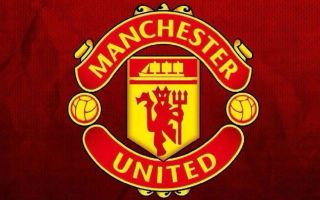

Fixtures and Results
Here is the fixtures and results from this 2019/20 season of Manchester United
Results
Date, Teams, Win, Lose or Draw, Result, Competition
11 Aug 2019 Manchester United v Chelsea W 4-0 Premier League
19 Aug 2019 Wolverhampton Wanderers v Manchester United D 1-1 Premier League
24 Aug 2019 Manchester United v Crystal Palace L 1-2 Premier League
31 Aug 2019 Southampton v Manchester United D 1-1 Premier League
14 Sep 2019 Manchester United v Leicester City W 1-0 Premier League
19 Sep 2019 Manchester United v Astana W 1-0 UEFA Europa League
22 Sep 2019 West Ham United v Manchester United L 2-0 Premier League
25 Sep 2019 Manchester United v Rochdale W 1-1 (5-3) League Cup
30 Sep 2019 Manchester United v Arsenal D 1-1 Premier League
01 Oct 2019 Lincoln City v Manchester United W 0-1 Football League Trophy
03 Oct 2019 AZ Alkmaar v Manchester United D 0-0 UEFA Europa League
06 Oct 2019 Newcastle United v Manchester United L 1-0 Premier League
20 Oct 2019 Manchester United v Liverpool D 1-1 Premier League
24 Oct 2019 Partizan Belgrade v Manchester United W 0-1 UEFA Europa League
27 Oct 2019 Norwich City v Manchester United W 1-3 Premier League
29 Oct 2019 Doncaster Rovers v Manchester United W 1-2 Football League Trophy
30 Oct 2019 Chelsea v Manchester United W 1-2 League Cup
02 Nov 2019 AFC Bournemouth v Manchester United L 1-0 Premier League
07 Nov 2019 Manchester United v Partizan Belgrade W 3-0 UEFA Europa League
10 Nov 2019 Manchester United v Brighton and Hove Albion W 3-1 Premier League
24 Nov 2019 Sheffield United v Manchester United D 3-3 Premier League
28 Nov 2019 Astana v Manchester United L 2-1 UEFA Europa League
01 Dec 2019 Manchester United v Aston Villa D 2-2 Premier League
04 Dec 2019 Tranmere Rovers v Manchester United L 3-2 Football League Trophy
04 Dec 2019 Manchester United v Tottenham Hotspur W 2-1 Premier League
07 Dec 2019 Manchester City v Manchester United W 1-2 Premier League
12 Dec 2019 Manchester United v AZ Alkmaar W 4-0 UEFA Europa League
15 Dec 2019 Manchester United v Everton D 1-1 Premier League
18 Dec 2019 Manchester United v Colchester United W 3-0 League Cup
22 Dec 2019 Watford v Manchester United L 2-0 Premier League
26 Dec 2019 Manchester United v Newcastle United W 4-1 Premier League
28 Dec 2019 Burnley v Manchester United W 0-2 Premier League
01 Jan 2020 Arsenal v Manchester United L 2-0 Premier League
04 Jan 2020 Wolverhampton Wanderers v Manchester United D 0-0 FA Cup
07 Jan 2020 Manchester United v Manchester City L 1-3 League Cup
11 Jan 2020 Manchester United v Norwich City W 4-0 Premier League
15 Jan 2020 Manchester United v Wolverhampton Wanderers W 1-0 FA Cup
19 Jan 2020 Liverpool v Manchester United L 2-0 Premier League
22 Jan 2020 Manchester United v Burnley L 0-2 Premier League
26 Jan 2020 Tranmere Rovers v Manchester United W 0-6 FA Cup
29 Jan 2020 Manchester City v Manchester United W 0-1 League Cup
01 Feb 2020 Manchester United v Wolverhampton Wanderers D 0-0 Premier League
17 Feb 2020 Chelsea v Manchester United W 0-2 Premier League
20 Feb 2020 Club Brugge v Manchester United D 1-1 UEFA Europa League
23 Feb 2020 Manchester United v Watford W 3-0 Premier League
27 Feb 2020 Manchester United v Club Brugge W 5-0 UEFA Europa League
01 Mar 2020 Everton v Manchester United D 1-1 Premier League
05 Mar 2020 Derby County v Manchester United W 0-3 FA Cup
08 Mar 2020 Manchester United v Manchester City W 2-0 Premier League
12 Mar 2020 LASK Linz v Manchester United W 0-5 UEFA Europa League
Fixtures
15 Mar 2020 Tottenham Hotspur v Manchester United Premier League
19 Mar 2020 Manchester United v LASK Linz UEFA Europa League
22 Mar 2020 Norwich City v Manchester United FA Cup
Other Fixtures are Postponed for now